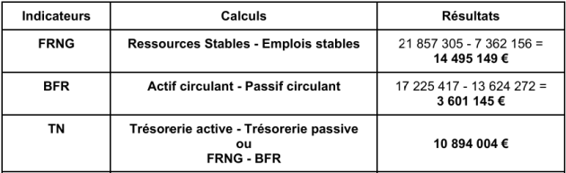

Exercice : Partie 2 - Questions
Question
5. Justifier l’intérêt de la marque employeur pour répondre aux besoins de recrutement de Topschuss.
Indice
Montrer que la marque employeur de Topschuss lui permet de recruter les meilleurs profils. (6 points)
MSDGN terminale Thème 2 - 2.3. Distinguer les différentes modalités de communication mobilisées par une organisation
Solution
La marque employeur représente l’attractivité de Topschuss pour ses employés actuels et potentiels. Topschuss a des besoins en recrutement (10 à 15 postes par an) pour accompagner sa croissance. Pour attirer les talents, sur son site de recrutement, Topschuss met en avant l’esprit Rebloch’Family (aventure collective avec des actions de cohésion d’équipe), des possibilités d’évolution en interne et un cadre de travail stimulant et agréable. Les collaborateurs ont aussi la possibilité de s’engager dans des actions en faveur de l’environnement, en phase avec les valeurs de l’entreprise. Avoir une marque employeur forte permet ainsi de conserver et de recruter les meilleurs profils tout en bénéficiant d’une bonne réputation.
Question
6. En une quinzaine de lignes, à partir de vos connaissances et d’exemples d’organisations dont celui de l’entreprise Topschuss, expliquer en quoi la qualité de vie au travail peut contribuer à la performance globale.
Indice
Les élèves doivent montrer que la QVT est source de performance sous ses différentes dimensions (sociale, commerciale, financière et environnementale) (15 points)
SDGN première Thème 1 - Etablir le lien entre les conditions de travail et le comportement des membres de l’organisation.
MSDGN terminale Thème 2 - 2.1. Distinguer les facteurs de motivation
Solution
La qualité de vie au travail ou QVT désigne les différents programmes mis en place par les entreprises pour améliorer le confort de leurs collaborateurs en vue d'accroître à la fois leur bien-être et leur performance professionnels. La performance d’une organisation peut être analysée sous différentes dimensions :
Au niveau social, les actions proposées pour une bonne QVT sont nombreuses :
des activités sportives au sein de l’organisation (mur d’escalade, pétanque, salle de sport),
la création d’espaces de détente au sein du siège social (salle de sieste avec capsules pour se reposer),
le projet de création d’une crèche d’entreprise.
À travers l’amélioration de la qualité de vie au travail, Topschuss cherche à attirer de nouveaux collaborateurs et de limiter la rotation de personnel (turn-over) et l’absentéisme.
Au niveau de la performance commerciale : l’amélioration de la qualité de vie au travail permet une meilleure implication des salariés notamment dans la relation client. Ceci contribue à apporter une réponse adaptée aux besoins des clients pour une meilleure satisfaction client.
Au niveau de la performance financière : l’amélioration de la productivité, la limitation de l'absentéisme et de la rotation de personnel permettent à l’organisation de réduire les coûts.
Au niveau de la performance environnementale : le respect de l’environnement est une préoccupation de plus en plus importante pour les salariés. Travailler dans une entreprise qui prend en compte ce type de problématique peut contribuer à favoriser le bien-être du salarié. En effet, un salarié qui travaillera dans un environnement en adéquation avec des valeurs pour lesquelles il a une certaine sensibilité, favorisera son bien-être. Topschuss a pris en compte cela notamment pour la conception de son nouveau siège social, en limitant les dépenses énergétiques et dans son entrepôt avec la réduction des dépenses en emballage notamment. La QVT et la performance environnementale des entreprises sont souvent complémentaires.
Penser à mobiliser des exemples d’organisation comme O’Tera, Phénix ou Kalyadis.
Question
7. Analyser l’équilibre financier de Topschuss en 2022 en calculant le fonds de roulement net global (FRNG), le besoin en fonds de roulement (BFR) et la trésorerie nette (TN). Commenter les résultats.
Indice
Calculs des trois indicateurs attendus et leurs commentaires associés. (8 points)
MSDGN terminale Thème 1 - 1.2. Apprécier les besoins financiers grâce à quelques indicateurs : le FRNG, le BFR et la TN
Solution

Topschuss a une trésorerie nette largement positive de 10 894 004 €. Ce montant semble suffisant pour faire face aux dépenses courantes et aux investissements à court et moyen terme. Néanmoins, une croissance rapide peut rapidement amener des changements et bouleverser l’équilibre positif financier de l’organisation. Le chef d’entreprise devra donc rester vigilant lors du développement de l’activité de son entreprise.
Question
8. Repérer et justifier la pertinence du choix de financement de Topschuss pour son développement.
Indice
Les deux choix de financement externe sont attendus ainsi que leur justification. (6 points)
MSDGN terminale Thème 1 - 1.2. Identifier les choix de financement possibles
Solution
C’est un financement externe via les investisseurs qui a récemment été choisi par Topschuss pour financer le développement de nouvelles boutiques. En effet, l’organisation a récolté 10 millions d’euros auprès de trois investisseurs privés : MK Développement, Sofimac Régions et 123 IM. Ces investisseurs ont pris des parts dans le capital de l’entreprise, néanmoins le dirigeant de l’entreprise Thomas R. reste l’actionnaire majoritaire. Topschuss a fait ainsi le choix du financement externe qui permet d’avoir rapidement accès à une somme d’argent conséquente afin de financer son développement. Ce mode de financement a comme principal inconvénient le risque de perte de contrôle de l’entreprise au profit des nouveaux associés/actionnaires ce qui peut constituer un risque pour l’actuel dirigeant. Malgré tout, Thomas R. reste majoritaire et ne semble pas pour le moment menacé par cela.